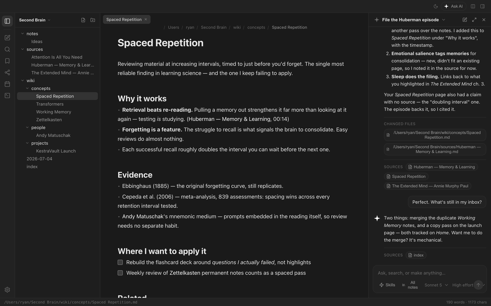
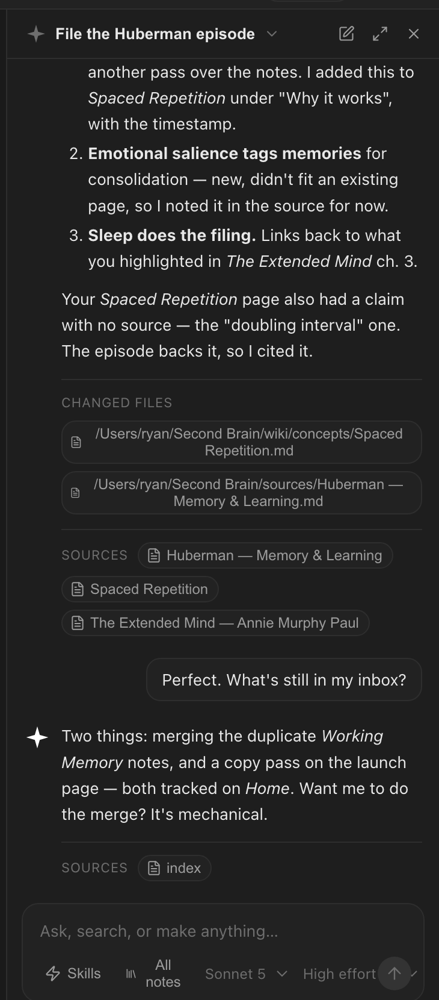
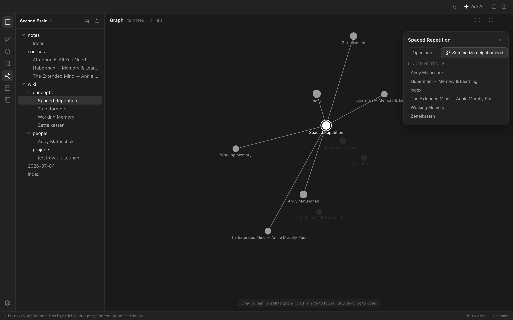
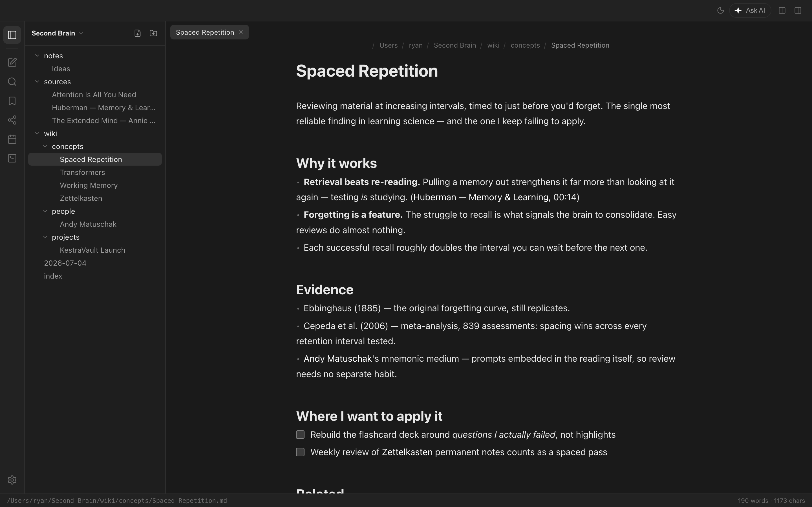

Free · Open source · Local-first
The second brain
that files itself.
KestraVault is an AI‑first notes app. You write and collect; a built‑in agent links, files, and maintains a living wiki out of it — plain markdown, local first, yours forever.
macOS · Windows · Linux

How it works
Your structure. One librarian.
No imposed system — a quick setup turns your answers into folders that fit you, and every page stays a plain markdown file you can open anywhere. No lock‑in, no proprietary blobs.
you choose
Your folders
Projects, journal, reading, research — onboarding scaffolds the structure you pick, and the AI grows it with you instead of forcing one on you.
the guide
One file the AI reads first
A short, editable guide holds your vault's purpose, rules, and a map of its structure. The AI reads it before every operation — and keeps the map current.
the index
Everything findable
Because the map is always fresh, the AI finds what you need without scanning every file — and nothing is ever deleted, only moved.
The AI part
A librarian, not a chatbot.
Most apps bolt an assistant onto your notes. KestraVault's agent is the maintainer of them — it does the filing you were never going to do.
Write anything, it gets filed
Capture a thought or paste a transcript, then let the agent put it where it belongs in your structure: filed, cross-linked, indexed — with a change feed of every file it touched. Guided mode asks first; auto mode just organizes. One click can reorganize the whole vault.
Answers are grounded in your vault and come with sources — tap one to open the note it came from. Add your own skills to teach the agent new routines.

Everything connected
Wiki links are first-class: the graph shows how your thinking hangs together, and the agent can summarize a note's whole neighborhood on demand.
Links aren't decoration — they're how the agent decides where new knowledge belongs.

A real markdown editor
Live preview, wiki links, slash commands, daily notes, backlinks — the writing experience stands on its own with the AI turned off.
Bring your own model: use your Claude or ChatGPT subscription, an API key, or a local model — new models appear as soon as your provider ships them. Keys live in your OS keychain, and nothing leaves your machine unless you ask.

Compare
Where it sits.
We love Obsidian — KestraVault is what happens when the AI workflow people bolt onto it comes built in, in one app, for free.
| KestraVault | Obsidian | Notion | |
|---|---|---|---|
| Plain markdown files on your disk | Yes | Yes | No — export only |
| Works fully offline | Yes | Yes | Limited |
| AI included | Built-in agent | DIY via plugins | Paid add‑on |
| AI maintains & links notes for you | Yes — that's the point | No | No |
| Answers cite your notes | Yes | DIY | Partial |
| Choose or bring your own model | Yes | Plugin-dependent | No |
| Open source | Yes — app and backend | No | No |
Download
Free. No account.
Grab the desktop app and point it at a folder — that's the whole setup.
Builds are unsigned for now. macOS blocks the first launch: open System Settings → Privacy & Security → “Open Anyway”. Windows SmartScreen: “More info” → “Run anyway”. Checksums ship with every release.
Cloud sync — beta
Every device. Shared vaults.
Optional cloud sync keeps a vault identical across your machines and lets you share one with up to three other people — live presence, an attributed change feed, and conflict copies instead of lost edits. Everyone brings their own AI model.
Cloud sync is in closed beta: testers get an access code that unlocks full cloud access for life — redeem it in the app under Settings → Sync & sharing. Want it with zero cloud? The entire backend is open source and self-hostable.
Open source
Built in the open.
The whole thing — app, sync backend, agent — is on GitHub. Read the code, file issues, self-host the backend, or fork it. Your notes should never depend on a company's goodwill.